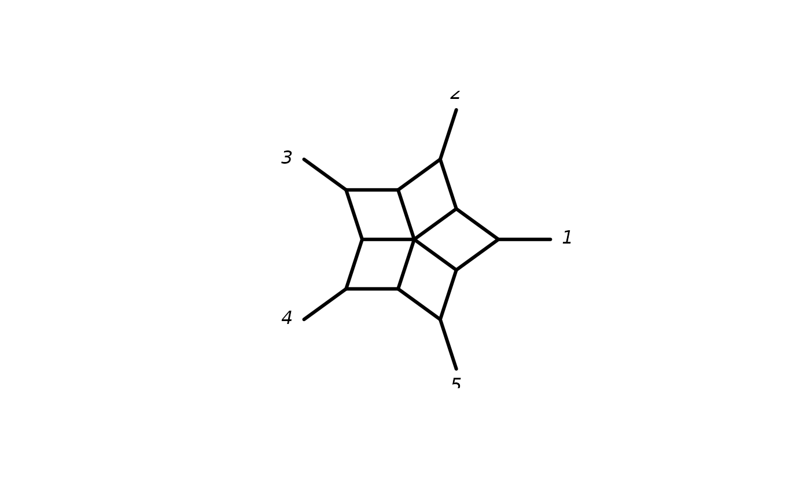

as.splits produces a list of splits or bipartitions.
Usage
allSplits(k, labels = NULL)
allCircularSplits(k, labels = NULL)
as.splits(x, ...)
# S3 method for class 'splits'
as.matrix(x, zero.print = 0L, one.print = 1L, ...)
# S3 method for class 'splits'
as.Matrix(x, ...)
# S3 method for class 'splits'
print(x, maxp = getOption("max.print"), zero.print = ".",
one.print = "|", ...)
# S3 method for class 'splits'
c(..., recursive = FALSE)
# S3 method for class 'splits'
unique(x, incomparables = FALSE, unrooted = TRUE, ...)
# S3 method for class 'phylo'
as.splits(x, ...)
# S3 method for class 'multiPhylo'
as.splits(x, ...)
# S3 method for class 'networx'
as.splits(x, ...)
# S3 method for class 'splits'
as.prop.part(x, ...)
# S3 method for class 'splits'
as.bitsplits(x)
# S3 method for class 'bitsplits'
as.splits(x, ...)
compatible(obj1, obj2 = NULL)Arguments
- k
number of taxa.
- labels
names of taxa.
- x
An object of class phylo or multiPhylo.
- ...
Further arguments passed to or from other methods.
- zero.print
character which should be printed for zeros.
- one.print
character which should be printed for ones.
- maxp
integer, default from
options(max.print), influences how many entries of large matrices are printed at all.- recursive
logical. If recursive = TRUE, the function recursively descends through lists (and pairlists) combining all their elements into a vector.
- incomparables
only for compatibility so far.
- unrooted
todo.
- obj1, obj2
an object of class splits.
Value
as.splits returns an object of class splits, which is mainly
a list of splits and some attributes. Often a splits object will
contain attributes confidences for bootstrap or Bayesian support
values and weight storing edge weights.
compatible return a lower triangular matrix where an 1 indicates that
two splits are incompatible.
Author
Klaus Schliep klaus.schliep@gmail.com
Examples
(sp <- as.splits(rtree(5)))
#> t4 t5 t1 t3 t2
#> [1,] | . . . .
#> [2,] . | . . .
#> [3,] . . | . .
#> [4,] . . . | .
#> [5,] . . . . |
#> [6,] | | | | |
#> [7,] | | . . .
#> [8,] . . | | |
#> [9,] . . . | |
write.nexus.splits(sp)
#> #NEXUS
#>
#> [Splits block for Spectronet or SplitsTree]
#> [generated by phangorn 2.12.1 ]
#>
#> BEGIN TAXA;
#> DIMENSIONS ntax=5;
#> TAXLABELS t4 t5 t1 t3 t2 ;
#> END;
#>
#> BEGIN SPLITS;
#> DIMENSIONS ntax=5 nsplits=8;
#> FORMAT labels=left weights=yes confidences=no intervals=no;
#> MATRIX
#> 1 0.478118034312502 1,
#> 2 0.924074469832703 1 3 4 5,
#> 3 0.976170694921166 1 2 4 5,
#> 4 0.356726912083104 1 2 3 5,
#> 5 0.431473690550774 1 2 3 4,
#> 6 0.129372348077595 1 2,
#> 7 0.59876096714288 1 2,
#> 8 0.731792511884123 1 2 3,
#> ;
#> END;
spl <- allCircularSplits(5)
plot(as.networx(spl))
